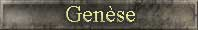
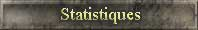
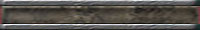

|
 |
 |

| |
|
|

La fin d'une ère est arrivée. Chacun a son histoire, mais le monde a vu émerger plusieurs grands seigneurs. Des royaumes ont connu la gloire et d'autre la déchéance. Laissez moi vous raconter quelques récits qui ont marqués l'histoire.
Quand l'ere était jeune toutes les races luttaient pour survivre. Certain ont connu de grand moment lors de leur combat, et d'autre ont pris de l'expansion a travers de vaste campagne d'exploration. Une seigneurie s'est imposée avec force. La grande seigneurie City of Dwarf fut pour un temps la plus grande. Les guerriers nains faisaient des ravages partout ou ils passaient. Durant une guerre, City of Dwarf lanca son armée. Voyant une chance de conquérir la ville, le seigneur habitant Dreamland lança une attaque désespérée contre le nain. La cité de Dreamland était sans défense. C'est alors que la minuscule seigneurie oubliée de Golden Weed lança son armée de morts-vivants sur la seigneurie désertée. Un massacre terrible se produisit. Les pertes de Dreamland était tellement élevées, que cela provoqua la perte de la seigneurie. Dreamland fut complètement anéanti.
Pendant ce temps la, les elfes nobles de la seigneurie de Chibougameau subissaient les foudres des humains de Mythdranor. Les elfes ont résisté à plusieurs attaques cinglantes sur leur seigneurie. Les humains de Mythdranor voulaient devenir les plus puissants du monde, et rien ne les arrêteraient. Voyant que les humains devenaient de plus en plus fort, les nains de City of Dwarf décidèrent d'attaquer en grand nombre Mythdranor. Mais le général nain perdit le combat. Cette attaque fut celle qui entraina la fin du royaume des nains, car trop peu de défense étaient resté pour la défendre. Une multitude de seigneurs venant des 4 coins du monde dévastèrent la seigneurie.
Mythdranor dominait le monde, bien que des centaures de la seigneurie Patate et que des gargouilles de la seigneurie Raton érigèrent d'immense cité, personne ne parvint à égaler la seigneurie humaine de Mythdranor.

La fin de l'ere de la genèse a vue grandir plusieurs seigneuries, voici les différents classements qui résument cette période..

Classement
selon le nombre d'acre selon la valeur en fonction de la race des royaumes des décisions de guerre selon les troupes militaires
des généraux offensif des généraux défensif des mages
des voleurs